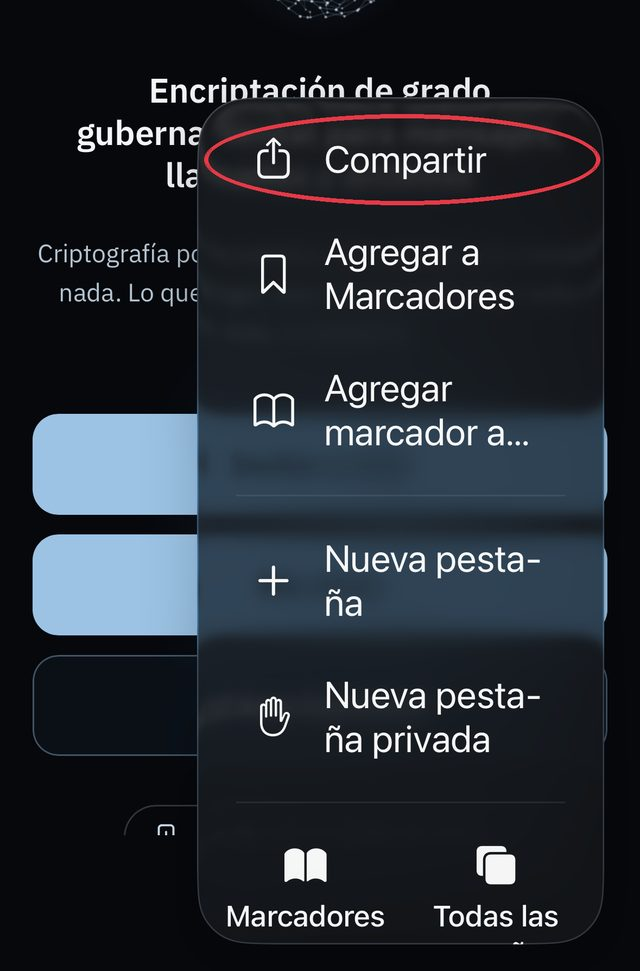
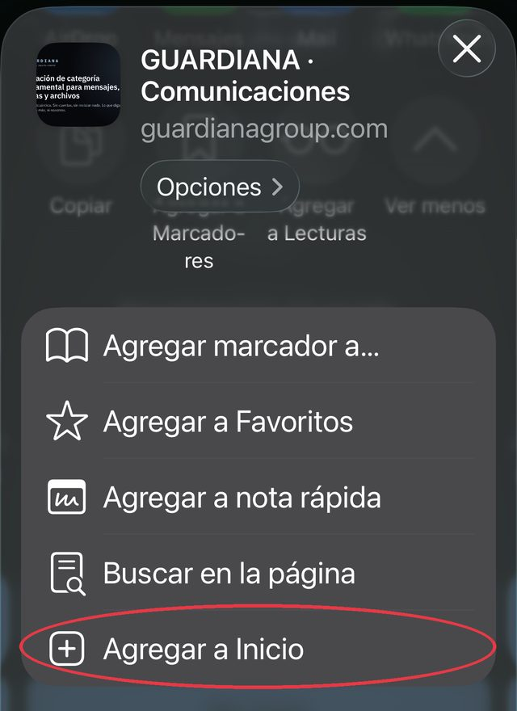
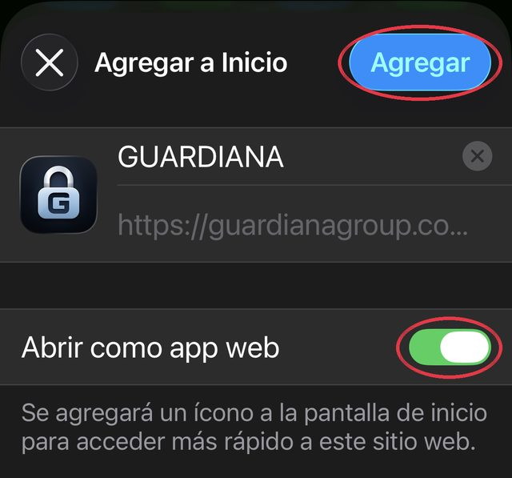

Se han borrado los datos de esta conversación en este equipo.
Lo que se haya descargado fuera de GUARDIANA puede seguir en el dispositivo. Ya puedes cerrar esta pestaña.
Chat borrado
Pasaron 10 minutos sin usarlo y se ha borrado de este teléfono.
Se ha borrado de este teléfono.
Para volver a hablar, pide una invitación nueva. Para que tus chats no se borren, descarga GUARDIANA.
InicioComunicacionesGUARDIANATus datos, bajo tu controlMultas
Por qué GUARDIANA es así
Cada decisión de esta aplicación responde a algo que ocurre todos los días. Estos son los datos, y lo que hacemos por cada uno de ellos.
¿Sabías que…?
20.870 M US$
En 2025 se denunciaron al FBI pérdidas récord por delitos en internet: 20.870 millones de dólares. Ese mismo año, la FTC recibió denuncias por 3.500 millones en estafas de suplantación: falsos bancos, empresas y organismos.
Por eso en GUARDIANA cada conversación nace de una invitación que solo tiene la persona que tú elegiste o de un número que los dos han añadido, y el número de seguridad te dice si hay alguien en medio.
¿Sabías que…?
25 M US$
En 2024, un empleado de Arup en Hong Kong transfirió 25 millones de dólares tras una videollamada en la que su jefe y sus colegas eran falsos, hechos con inteligencia artificial. Con tu cara y tu voz grabadas se te puede suplantar; y, a diferencia de una contraseña, no se pueden cambiar.
Por eso en las videollamadas Ultra puedes poner tu cara en mosaico y cambiar tu voz antes de que salga nada de tu equipo, para que lo que viaje sirva mucho menos para imitarte. Tú decides, con un toque, cuándo mostrarte.
¿Sabías que…?
≈ 200
En 2026, WhatsApp avisó a unas 200 personas de que habían instalado una versión falsa de la aplicación con un programa espía. En 2025 avisó a unas 90, entre ellas periodistas, atacadas por el programa espía Paragon; y en 2019, Pegasus atacó unas 1.400 cuentas.
Por eso GUARDIANA no pasa por ninguna tienda. Vive en tu navegador: no puede leer tus contactos ni tus fotos, no deja nada corriendo a escondidas y no hay una versión falsa que descargar de una tienda; solo comprueba que la dirección es guardianagroup.com. Añadirla a la pantalla de inicio es guardar esa misma página en tu teléfono. Y seamos claros: ninguna app, de tienda o web, protege un teléfono que ya tenga un programa espía dentro.
¿Sabías que…?
110 M
En 2024, AT&T confirmó el robo de los registros de llamadas y SMS de unos 110 millones de clientes: con quién hablaron y cuándo. Ese mismo año se denunciaron pérdidas de 470 millones de dólares por estafas que empezaron con un SMS.
Por eso GUARDIANA no te pide teléfono, correo ni cuenta: lo que no existe no se puede robar ni filtrar. Y nuestro relé no guarda con quién hablas; cuando salen los dos, la sala desaparece.
¿Sabías que…?
FBI · CISA
En diciembre de 2024, el FBI y la CISA recomendaron usar mensajería encriptada tras la intrusión de hackers chinos en las operadoras de telefonía de Estados Unidos.
Por eso los mensajes y los archivos van encriptados de extremo a extremo con un acuerdo de claves postcuántico híbrido, pensado para resistir a los ordenadores cuánticos. En Chrome y Edge, las llamadas añaden una capa postcuántica cuando los dos equipos la tienen activa.
¿Sabías que…?
6,8 M
En el primer semestre de 2025, WhatsApp cerró más de 6,8 millones de cuentas ligadas a centros de estafas.
Por eso en GUARDIANA no hay cuentas que crear ni buscar. Solo puede escribirte quien tenga tu invitación o a quien tú hayas añadido, y GUARDIANA no te pide el teléfono, así que tampoco sirve para encontrarte.
¿Sabías que…?
57 %
En 2025, el 57 % de los adultos de 42 países sufrió al menos un intento de estafa en doce meses, y el 23 % perdió dinero (encuesta de GASA y Feedzai a 46.000 personas). En Sudamérica, el 72 %.
Por eso saber tu Número GUARDIANA no basta para llamarte ni para escribirte: para hablar, los dos tienen que añadirse. Un número marcado al azar no llega a nadie, ni dice siquiera si existe.
¿Sabías que…?
48,8 %
En Colombia se denunciaron 13.428 casos de extorsión en 2025 y, en las capitales, el 48,8 % fue por teléfono (estudio de Asocapitales y el DNP con los registros de la Policía).
Por eso en GUARDIANA no existe la llamada de un desconocido: solo suena quien tú añadiste, y a quien molesta lo quitas con un toque y no vuelve a sonar.
Esto no es desconfianza. Es lo que las cifras oficiales cuentan cada año. GUARDIANA está construida para reducir esos riesgos y para decir con claridad lo que no puede evitar.
Ninguna tecnología protege de todo: la encriptación no impide que quien recibe guarde copias, y nada protege un teléfono que ya esté infectado por otra vía.
Para llamar y descargar archivos, abre GUARDIANA en tu navegadorEstás dentro de otra aplicación: aquí la cámara, el micrófono o las descargas pueden fallar.
Mensajes, llamadas y archivos encriptados de extremo a extremo
Mensajes y archivos con encriptación postcuántica híbrida. Sin cuentas ni números de teléfono. Nuestro servidor no puede leer lo que escribes.
Para particulares y profesionales: chatea y envía datos y documentación sensible, encriptados de extremo a extremo. Al terminar, la conversación se borra en los dos equipos.
Particulares
Profesionales con clientes
Documentación sensible
Mis chats
Aún no tienes chats.Cuando invites a alguien y te conteste, su chat saldrá aquí.
Llamar
¿Cómo funciona?
Mensajes, llamadas, videollamadas y archivos entre dos personas, encriptados de extremo a extremo. Sin cuenta, sin número de teléfono, sin correo y sin tiendas de aplicaciones: en el teléfono, con tu Número GUARDIANA; en el ordenador, con una invitación.
Tu Número GUARDIANA
Un número tuyo, creado en tu teléfono. Al abrir GUARDIANA desde la pantalla de inicio, te propone un número de 12 cifras (puedes pedir otro o elegir el tuyo). No es un número de teléfono y no está ligado a tu nombre, tu correo ni tu línea.
Para hablar, los dos os añadís. Toca «Llamar», escribe el número de la otra persona y ponle el nombre que quieras. Cuando ella añada también el tuyo, el chat se abre solo en los dos teléfonos y desde ahí escribís, llamáis y hacéis videollamadas. Si tiene GUARDIANA cerrada, le llega el aviso «Nuevo contacto».
Saber tu número no basta para escribirte. Quien teclee un número al azar, o el tuyo sin que tú lo hayas añadido, no consigue nada: ni un mensaje, ni una llamada, ni saber si ese número existe. Así no hay llamadas de desconocidos ni publicidad.
Cómo pasar tu número. Tu número no es una llave: con él nadie lee nada ni te contacta. Lo seguro es dárselo en persona o de viva voz; por escrito también vale (WhatsApp, correo…). Si alguien te dice «guarda mi nuevo número», llámalo antes a su número de siempre: es una estafa habitual.
Qué sabe GUARDIANA de tu número. El número nunca sale de tu teléfono: a nuestro servidor llega una huella (un cálculo del que no sale el número) junto con tus claves públicas. Mientras los dos os añadís, el servidor guarda una «cita» cerrada que ninguno de los dos puede leer por separado y que se borra cuando el chat se abre. No guardamos nombres, teléfonos ni correos. Para avisarte con la app cerrada, el servidor guarda la dirección de avisos de tu teléfono y las salas de tus chats (identificadores al azar, sin nombres ni contenido). Y, como cualquier servidor, ve tu dirección de conexión y la hora mientras estás conectado.
Buzón encriptado. Si la otra persona tiene GUARDIANA cerrada, tu mensaje no espera en tu teléfono: se cierra en un sobre que solo el suyo puede abrir y queda en nuestro servidor hasta que lo recoge (7 días como mucho); después se borra. Verás ✓ cuando está guardado, ✓✓ cuando le llega y ✓✓ en verde cuando lo lee.
En tu pantalla de inicio
iPhone. Abre guardianagroup.com en Safari, toca «Descargar GUARDIANA», luego el botón Compartir (el cuadrado con la flecha) y «Añadir a pantalla de inicio». Los avisos con la app cerrada solo llegan desde ese icono (iOS 16.4 o posterior).
Android. Abre guardianagroup.com en Chrome, toca «Descargar GUARDIANA» y acepta «Instalar» (o, en el menú ⋮, «Añadir a pantalla de inicio»). Desde el icono, los avisos funcionan con la app cerrada.
Sin tiendas. No hace falta App Store ni Google Play: la app es la propia página, guardada en tu teléfono, y se actualiza sola al abrirla.
Dos versiones
BlindadaGratis
Para el día a día. Mensajes, notas de voz, llamadas, videollamadas y archivos de hasta 4 GB, encriptados de extremo a extremo con protección postcuántica. Las llamadas van siempre por los relés de GUARDIANA, así que ninguno de los dos ve la dirección IP del otro, y, si los dos navegadores la admiten, el sonido y la imagen llevan además una capa postcuántica con una clave que cambia cada 2 minutos. El código de seguridad no sale en la pantalla: para comprobarlo, toca «Encriptada de extremo a extremo» durante la llamada.
UltraCon la suscripción Plus
Para los casos de máxima exigencia. Se crea desde el programa GUARDIANA para Windows; quien recibe la invitación entra gratis desde su navegador, sin el programa. Todo lo de la Blindada y, además: ML-KEM-1024 con ECDH P-384 para las claves y ML-DSA-87 con ECDSA P-384 para las firmas; identidad nueva en cada conversación, y nada de la conversación se guarda, ni en el navegador ni en el relé (sin buzón: los mensajes pasan solo si los dos están conectados; al cerrar la pestaña, desaparece); invitación de 256 bits solo por enlace o QR; cuatro palabras de verificación en el chat y en cada llamada, con alarma si no llegan; mensajes a ritmo fijo (una trama de 1 KB por segundo, con relleno si no hay nada) y voz a ritmo constante; la clave de la llamada cambia cada minuto y sin la capa postcuántica la llamada no empieza; mosaico irreversible y voz cambiada, hechos en tu equipo antes de encriptar; fotos sin datos ocultos y archivos con nombre neutro; lectura discreta, tecla de pánico y el nivel de cada lado a la vista; recibo negable y, si lo pides, comprobante firmado por los dos equipos.
Lo que llegará (sin fecha): en el programa de Windows, la ventana fuera de las capturas de pantalla, el aviso si otra app usa el micrófono o la cámara, el perfil sin disco, la comprobación antes de llamar y el código sellado; la voz sin el ruido de fondo; el fondo negro recortando la silueta; dos relés de operadores y países distintos; y una llave nueva con un intercambio nuevo en cada mensaje.
BlindadaUltra
Encriptación de extremo a extremo con acuerdo de claves postcuántico
✓ML-KEM-768 + P-256✓ML-KEM-1024 + P-384
Firmas sobre toda la negociación
✓ECDSA P-256✓ECDSA P-384 + ML-DSA-87
Llamadas y videollamadas por los relés de GUARDIANA: ninguno ve la IP del otro
✓✓
Capa postcuántica en el sonido y la imagen
✓si los dos navegadores la admiten; clave nueva cada 2 minutos✓obligatoria: sin ella la llamada no empieza; clave nueva cada minuto
Comprobar que nadie se ha puesto en medio
✓el código, al tocar el candado✓cuatro palabras para leer en voz alta, con alarma si no llegan; el número de 60 cifras, al tocarlas
Mosaico irreversible y voz cambiada (formantes, tono y paso banda), en tu equipo antes de encriptar
—✓
La conversación no se guarda, ni en el navegador ni en el relé (sin buzón); al cerrar la pestaña, desaparece
—✓
Tamaño y ritmo que no delatan cuándo escribes: una trama de 1 KB por segundo, con relleno si no hay mensaje, y voz a ritmo constante (Opus CBR)
—✓
Fotos y documentos con tiempo · avisos con la app cerrada
✓✓con tiempo; sin avisos con la app cerrada (la sala Ultra no se registra en el relé)
Fotos sin datos ocultos (ubicación, aparato, fecha)
✓✓y archivos con nombre neutro, sin fechas
Tamaño máximo por archivo
4 GB4 GB
Identidad nueva en cada conversación · claves renovadas cada 5 minutos
—✓
Lo que llega no se muestra solo (Mostrar / Descartar) · lectura discreta · tecla de pánico
—✓
Archivos «todo o nada» · autodestrucción ante ataque
—✓
Recibo negable por defecto; comprobante firmado por los dos equipos si lo pides
—✓
El nivel de cada lado a la vista: «PC con GUARDIANA» o «navegador del PC»
—✓
Llave nueva con un intercambio nuevo en cada mensaje (ratchet continuo)
—…próximamente
Dos relés de operadores y países distintos: ninguno ve las dos direcciones IP
—…próximamente
En el programa de Windows: la ventana fuera de las capturas y aviso si otra app usa el micrófono o la cámara
—…próximamente
Sin cuenta ni número de teléfono
✓✓
La Blindada es gratis. Ultra va con la suscripción Plus: se crea desde el programa GUARDIANA para Windows y quien recibe la invitación entra gratis desde su navegador, sin el programa. Lo marcado «próximamente» llegará después, sin fecha.
Qué hace por ti
Código de seguridad en la llamada. En la Blindada no sale en la pantalla: si quieres comprobar que nadie se ha puesto en medio, ni siquiera nuestro servidor, toca «Encriptada de extremo a extremo» durante la llamada y comparad de viva voz el código que aparece. Si es el mismo en las dos pantallas, nadie se ha interpuesto. Es el método que creó el autor de PGP (ZRTP, RFC 6189) y no exige enviar nada por otro sitio.
En Ultra, cuatro palabras para leer en voz alta. En el chat y en cada llamada: cuatro palabras del español, sacadas de las claves de los dos equipos y de un número al azar de cada lado con compromiso previo: quien se pusiera en medio tendría que acertarlas a ciegas. Si no llegan, salta la alarma y la conversación se borra en los dos equipos. Las leen en voz alta y listo; el número de 60 cifras sigue ahí, al tocarlas. Una voz clonada con IA debilita la comprobación de oído: por eso el número no se va.
Fotos y documentos con tiempo. Una vez, 30 segundos, un minuto o cinco: se ven dentro de GUARDIANA, no se pueden guardar y se borran del otro equipo. Quien envía puede borrar en los dos equipos cuando quiera.
En Ultra, la conversación no se guarda. La conversación vive solo en la memoria de la pestaña: al cerrarla, desaparece, también la identidad, que es nueva en cada conversación. El relé no tiene buzón para Ultra: los mensajes pasan solo si los dos están conectados. Fuera de una llamada, la pantalla se tapa al cambiar de app o de pestaña y, en una pantalla táctil, las claves de la sesión se borran de la memoria si la app se queda 15 segundos en segundo plano (al volver se acuerdan otras).
En Ultra, nada se muestra solo. Lo que llega aparece velado, con lo que es y su tamaño. Tú decides «Mostrar» o «Descartar»; lo descartado se borra sin abrirse y la otra persona lo sabe. El chat se ve borroso hasta que lo mantienes pulsado, y Esc dos veces (o «Borrar y salir» en el menú) borra la conversación de la memoria y sale.
Archivos «todo o nada» (Ultra). Cada archivo viaja en piezas cerradas como un paquete único (Rivest, MIT, 1997): sin todas las piezas no se puede desencriptar ni un byte, ni con la clave. Si falta una, no se muestra nada y lo recibido se borra.
Si detecta un ataque, se destruye (Ultra). Ante mensajes o piezas manipulados, «No coinciden» en las palabras de la llamada o la alarma del otro equipo, la conversación borra claves, mensajes y archivos en los dos equipos y te lo dice en pantalla.
Mosaico y voz cambiada (Ultra). En las videollamadas Ultra tu cara sale en mosaico: una rejilla de pocos bloques con el color medio de cada uno y un poco de ruido distinto en cada fotograma, de la que no se recupera el detalle (un desenfoque normal sí se puede revertir, por eso ya no se ofrece). La voz pasa por un cambio de formantes, de tono y un paso banda de 300 a 3000 Hz, con parámetros al azar en cada llamada. Todo se hace en tu equipo, antes de encriptar: tu imagen y tu voz originales no salen de él. No se distinguen los rasgos de tu cara ni tus ojos; sí tu silueta, tus gestos y lo que hay detrás de ti. La voz cambiada dificulta que te reconozcan de oído quienes no saben qué filtro usas; no engaña a un sistema de reconocimiento de voz entrenado para ello, ni oculta tu acento, tu vocabulario, tus muletillas ni tu ritmo.
Fotos sin datos ocultos y archivos con nombre neutro (Ultra). Las fotos se vuelven a codificar sin ubicación, aparato, fecha, perfil de color ni miniatura, y todo sale con un nombre neutro, sin fechas. Un PDF o un documento de Office puede llevar dentro el nombre de quien lo hizo: se avisa, porque la app no lo limpia.
Avisos con la app cerrada. Si lo activas, te avisa de un mensaje o una llamada aunque GUARDIANA no esté abierta. El aviso solo dice «mensaje» o «llamada»: el contenido sigue encriptado hasta que la abres.
Cómo protege
Las claves privadas nacen en tu equipo y no salen de él. Cada mensaje, foto, archivo y llamada se cierra con claves que solo tienen los dos equipos: nuestro servidor no puede abrirlo. Comparar el número de seguridad del chat o el código de la llamada confirma que nadie se ha interpuesto.
Algoritmos de la nueva generación. Los estándares pensados para resistir a los ordenadores cuánticos del futuro: en la Blindada, ML-KEM-768 (FIPS 203) junto a ECDH P-256; en Ultra, ML-KEM-1024 junto a ECDH P-384, con firmas ML-DSA-87 (FIPS 204) y ECDSA P-384 sobre toda la negociación.
Un servidor que solo pasa paquetes cerrados. No guarda nombres ni claves. En la Blindada, si la otra persona no está conectada, guarda tu mensaje encriptado hasta entregarlo (7 días como mucho); en Ultra no guarda nada: los mensajes pasan solo si los dos están conectados. Cuando los dos salen, la sala desaparece.
Código abierto y comprobable. Todo el código es público. La página «Seguridad y verificación» comprueba que lo que ha llegado a tu navegador es exactamente lo publicado.
Sin registro y sin tiendas
Ni teléfono, ni correo, ni cuenta, ni contraseña. Lo que no te pedimos no se puede robar, filtrar ni vender. Tu número de teléfono no circula, nadie te encuentra por él y en ningún sitio queda escrito quién eres.
¿Por qué desde la web y no una app de tienda? El teléfono ve cualquier aplicación, sea de tienda o web, y un programa espía instalado en él lo ve todo. Lo que aporta la web es otra cosa: no pasa por ninguna tienda (nadie la distribuye ni la cambia por el camino), pide menos permisos (no puede leer tus contactos, tus fotos ni otras apps), su código es público y publicamos la huella de cada archivo para que cualquiera compruebe que recibe lo mismo que todos, y si borras el icono, se borra todo. Su punto débil es nuestro servidor, que entrega el código en cada visita: por eso lo blindamos y, próximamente, cada versión irá firmada y anotada en un registro público.
De ordenador a ordenador. En el PC, GUARDIANA se abre con una invitación (un código de 9 cifras o un enlace) y está pensada para profesionales que envían documentación: archivos grandes, fotos y documentos con tiempo, y el código de seguridad de la llamada. Ultra se crea desde el programa GUARDIANA para Windows; próximamente, más capas de seguridad en el PC que no caben en un navegador: la ventana fuera de las capturas de pantalla y el aviso si otra app usa el micrófono o la cámara.
Lo que no hace
No impide que la otra persona guarde lo que envías sin tiempo, ni que haga una captura o una foto de la pantalla. No puede saber si alguien copió un paquete por el camino: una copia no deja huella; por eso todo viaja encriptado y la copia no sirve. No protege un teléfono que ya esté infectado por otra vía. Si nadie compara el número de seguridad del chat, las palabras ni el código de la llamada, no hay forma de saber si alguien se ha puesto en medio. En Ultra, el mosaico oculta los rasgos de la cara y los ojos, no la silueta ni los gestos; la voz cambiada no engaña a un sistema de reconocimiento de voz entrenado para ello ni oculta tu acento, tu vocabulario, tus muletillas ni tu ritmo; y nada impide que la otra persona grabe con otro aparato.
Tu Número GUARDIANA y «Llamar» están en la app: añádela a tu pantalla de inicio y ábrela desde su icono.
Te damos la bienvenida a GUARDIANAEste será tu Número GUARDIANA:
No uses tu teléfono ni tu fecha de nacimiento: se adivinan fácil.
No es un número de teléfono. Para hablar, los dos tienen que añadir el número del otro.
Tu Número GUARDIANA
Invitar
Tu código de invitación
···-···-···
Comunica este código a la otra persona por llamada o por cualquier aplicación de mensajería. Ella pulsa «Tengo un código», lo escribe y empieza la conversación.
Es válido durante 10 minutos y para un solo uso; después deja de funcionar.
Invitar
Chat blindado
Invitación blindadaInvita a una persona
Enlace copiado
Mostrar el código QR (para abrirlo con un móvil)
Invitación enviada
La conversación se abre sola en cuanto entre.
Te han invitado a una conversación encriptada
Mensajes, llamadas y videollamadas encriptados de extremo a extremo. ¿Aceptas?
Tu chat ya está en la app
Ábrela desde tu pantalla de inicio: el icono de GUARDIANA. Ya puedes cerrar esta página.
Descarga GUARDIANA
Chat, llamadas y videollamadas encriptados.
Pulsa Compartir
Pulsa Añadir a pantalla de inicio
Tengo un código
Escribe las 9 cifras que te han enviado
Código erróneo o caducado.
¿Te han enviado un enlace de invitación? Ábrelo directamente o pégalo aquí.
Comprobando…
Encriptación postcuántica híbrida
Cómo funciona Comunicaciones
Encriptación postcuántica
Cuando los dos equipos usan la versión actual, Comunicaciones combina ML-KEM-768, un algoritmo postcuántico estandarizado (FIPS 203), con ECDH P-256 para acordar las claves de cada conversación. Cada mensaje y cada archivo se encriptan con AES-256-GCM y una clave distinta.
En la Blindada, las firmas de identidad son clásicas (ECDSA P-256); en Ultra, cada equipo firma toda la negociación con ECDSA P-384 y con ML-DSA-87 (FIPS 204). Si la otra persona usa una versión anterior, te lo decimos y no seguimos sin tu permiso.
Cada archivo, verificado
Los archivos viajan en trozos encriptados y autenticados uno a uno. Si un trozo ha sido alterado, no supera la verificación y se descarta; el archivo solo se marca como completo cuando han llegado todos sus trozos autenticados. Esta comprobación no dice si el contenido del archivo es seguro.
Recibo de entrega (Ultra)
Cuando el archivo llega completo al otro equipo, en el chat aparece un recibo con los trozos autenticados y el tiempo. Va autenticado con la clave de la sesión, sin ninguna firma sobre el contenido: vale entre los dos y no sirve de prueba ante terceros (negable). Confirma la recepción, no que la otra persona lo haya abierto o leído.
Blindada y Ultra
Llamadas, videollamadas y Ultra
Llamadas y videollamadas
En la Blindada, desde la conversación. El audio y el vídeo van encriptados de extremo a extremo y siempre por el relé de GUARDIANA: ninguno de los dos ve la dirección IP del otro. Si los dos navegadores la admiten, llevan además una capa postcuántica con una clave que cambia cada 2 minutos.
El código de seguridad no sale en la pantalla: para compararlo con la otra persona, toca «Encriptada de extremo a extremo» durante la llamada. Si es el mismo en las dos pantallas, nadie se ha puesto en medio.
Ultra
Con la suscripción Plus, desde el programa GUARDIANA para Windows; quien recibe la invitación entra gratis desde su navegador, sin el programa. El acuerdo de claves combina ML-KEM-1024 con ECDH P-384 y cada equipo firma toda la negociación con ECDSA P-384 y con ML-DSA-87. Nada de la conversación se guarda, ni en el navegador ni en el relé. En la llamada, cuatro palabras de verificación (si no llegan, alarma y se cuelga), la clave cambia cada minuto y, sin la capa postcuántica, la llamada no empieza; el mosaico y la voz cambiada se hacen en tu equipo antes de encriptar.
La voz cambiada dificulta que te reconozcan de oído quienes no saben qué filtro usas. No engaña a un sistema de reconocimiento de voz entrenado para ello, ni oculta tu acento, tu vocabulario, tus muletillas ni tu ritmo.
Comprobante con doble firma (Ultra, si lo pides)
En Ultra, si al enviar marcas «Solicitar comprobante firmado», cada equipo firma el registro de la entrega dos veces: con ECDSA P-384 y con ML-DSA-87, una firma postcuántica. La otra persona lo ve antes de firmar. Las dos firmas se comprueban en esta web, sin enviar nada. Sin marcarlo, el recibo es negable.
Acredita que esos dos equipos firmaron el registro del envío; no acredita la identidad legal de las personas ni el contenido del archivo.
Para despachos, clínicas y empresas
Comunicaciones confidenciales con tus clientes
Envía documentación confidencial a tus clientes y habla con ellos desde el navegador, con encriptación de extremo a extremo. Sin instalar nada, sin cuentas y sin números de teléfono.
Archivos enormes, por partes
Expedientes completos, pruebas de imagen o vídeos: viajan en trozos encriptados, sin cargarse enteros en memoria ni guardarse en ningún servidor.
Con Chrome o Edge, quien recibe elige dónde guardarlo y se escribe en su disco según llega. En otros navegadores, hasta 300 MB.
Sin cuentas ni instalaciones
Tu cliente no descarga nada, no se registra ni da su teléfono: escribe el código que le das y entra desde su navegador.
Encriptado antes de salir
Mensajes y archivos se encriptan en tu equipo. Nuestro servidor pasa paquetes que no puede leer y no guarda nombres ni claves. Si la otra persona no está conectada, guarda tu mensaje en un sobre cerrado que solo su teléfono abre, hasta entregarlo (7 días como mucho).
Invitaciones de un solo uso
El código de 9 cifras sirve una sola vez y caduca a los 10 minutos; el servidor limita los intentos de adivinarlo.
Comprueba con quién hablas
Compara con la otra persona, por teléfono o en persona, el número de seguridad de 60 cifras: si coincide, nadie se ha interpuesto para leer la conversación.
Terminar y borrar
Borra la conversación en tu equipo y pide el borrado en el de la otra persona. Lo que haya guardado aparte queda fuera de nuestro alcance.
Cómo te protege
Las claves se crean en tu equipo y la parte privada no puede salir de él.
Cada sesión estrena claves nuevas.
Cada mensaje se cierra con una clave distinta, y la anterior se olvida.
El servidor solo ve paquetes cerrados: sabe qué equipos comparten una sala y cuántos datos mueven, no lo que contienen. La sala desaparece al salir la última persona.
Con el número de seguridad compruebas que nadie se ha interpuesto.
Ficha técnica para responsables de seguridad
CriptografíaWeb Crypto nativa del navegador para firma, acuerdo ECDH y encriptación; acuerdo de claves híbrido ECDH P-256 + ML-KEM-768 (FIPS 203, librería abierta @noble/post-quantum servida desde este sitio). Identidad con ECDSA P-256 (firma) y ECDH P-256 (acuerdo); claves privadas no exportables.
Establecimiento de sesiónPresentaciones firmadas y triple acuerdo ECDH (efímera–efímera, identidad–efímera, efímera–identidad) combinado con HKDF-SHA256; material nuevo en cada sesión.
ContenidoAES-256-GCM, con una clave por mensaje derivada con cadenas HMAC-SHA256; la anterior se descarta.
ArchivosTrozos de 192 KB encriptados uno a uno; quien envía nunca carga el archivo entero y, con Chrome o Edge, quien recibe lo escribe en disco según llega.
InvitaciónCódigo de 9 cifras, un solo uso, 10 minutos e intentos limitados. El relé solo guarda un sobre cerrado con una clave derivada del código en el navegador (PBKDF2, 300.000 iteraciones).
Relé y verificaciónEl relé no guarda nombres ni claves y solo sabe qué conexiones comparten una sala y cuántos bytes mueven; para quien no está conectado, guarda el mensaje en un buzón encriptado (sobre híbrido ECDH P-256 + ML-KEM-768, firmado) hasta entregarlo, 7 días como mucho. Número de seguridad de 60 cifras para comprobar fuera de banda.
UltraAcuerdo híbrido ECDH P-384 + ML-KEM-1024 (FIPS 203) con HKDF-SHA-384; firmas ECDSA P-384 sobre SHA-384 y ML-DSA-87 (FIPS 204) sobre toda la negociación; identidad nueva en cada conversación, solo en memoria (claves Web Crypto no exportables; la clave privada ML-DSA-87 vive sellada con AES-256-GCM y se abre solo para firmar; los arrays postcuánticos se borran con ceros tras usarse); nada de la conversación en IndexedDB ni en localStorage; invitación de 256 bits solo en el fragmento del enlace o en QR; cuatro palabras de verificación (11 bits cada una, de una lista de 2048) derivadas con SHA-384 de las dos identidades y de 32 bytes al azar de cada lado, con compromiso previo de quien inicia (al estilo de ZRTP), y las de la llamada, de su propio acuerdo, también con compromiso previo; número de seguridad de 60 cifras; claves renovadas cada 5 minutos; mensajes a ritmo fijo, una trama de 1 KB por segundo mientras los dos están conectados (un mensaje o un trozo, un acuse, el «leído», el «escribiendo…» o relleno), nunca con marca de aviso; último trozo de cada archivo completo; sin buzón en el relé; recibo autenticado con la clave de la sesión y comprobante firmado solo a petición; fotos recodificadas sin EXIF, GPS, ICC ni miniaturas, y archivos con nombre neutro; avisos sin contenido y solo del propio navegador (las salas Ultra no se registran en el relé para avisos).
LlamadasWebRTC solo a través del servidor TURN de GUARDIANA; la oferta, la respuesta y la huella DTLS viajan dentro del canal encriptado de extremo a extremo; audio y vídeo con DTLS-SRTP y, si los dos navegadores la admiten, una capa postcuántica encima (AES-256-GCM, con una clave sacada de la sesión del chat con HKDF-SHA-256, que cambia cada 2 minutos). En Ultra, esa capa es obligatoria (sin ella la llamada no empieza), su clave cambia cada minuto, las palabras de verificación de la llamada salen de un acuerdo ECDH P-256 con compromiso previo (SHA-256), Opus va a ritmo constante (cbr=1, usedtx=0) sin la extensión de cabecera que manda el volumen de cada paquete (ssrc-audio-level, RFC 6464), no se puede pasar al teléfono y el mosaico (rejilla de 24 bloques de ancho, color medio con ruido por fotograma, bordes duros) y la voz cambiada (predicción lineal de orden 32 con deformación bilineal de los formantes, cambio de tono y paso banda de 300 a 3000 Hz, parámetros al azar por llamada) se procesan en el navegador antes de encriptar.
Pensado para
Abogados y notaríasContratos, borradores y expedientes con tus clientes, sin pasar por el correo ni obligarles a registrarse en un portal.
Clínicas y consultasInformes y pruebas de imagen para tus pacientes por un canal encriptado, tras comprobar el número de seguridad por teléfono.
Asesorías, RR. HH. y empresasNóminas, contratos laborales, auditorías y documentación interna, en conversaciones que borras al terminar.
La encriptación protege lo que viaja entre los dos equipos, pero no impide que quien recibe guarde copias o haga capturas, ni protege un equipo ya comprometido. Nuestro servidor ve datos de conexión (dirección IP, hora y volumen), no el contenido.
Conversación encriptadaSELLADAEsperando a la otra persona…
¿Te avisamos cuando llegue un mensaje o una llamada con GUARDIANA minimizada? El aviso no muestra el contenido.
¿Guardar como contacto?
La otra persona no ha usado la protección postcuántica. Como esta conversación ya la tenía, se ha detenido.
Comprueba el número de seguridad
Compara este número con la otra persona: léelo en voz alta por teléfono o compáralo en persona.
—
Tú: pendienteLa otra persona: pendiente
Conectando con la otra persona…La conversación se abre sola en cuanto esté conectada.
0:00Desliza para cancelar
Seguridad
Número de seguridad
Si los dos comprueban el mismo número por otra vía (teléfono, en persona), nadie se ha interpuesto para leer la conversación. Entonces marca «Verificada».
—
Privacidad de la conversación
Se borra aquí y se pide el borrado en el navegador de la otra persona (si está conectada; si no, en cuanto entre). No alcanza lo que ya haya guardado en su disco. No se puede deshacer.
¿Eliminar este chat?
Se borra el chat aquí y en el teléfono de la otra persona. Para volver a hablar, tendrán que invitarse otra vez.
¿Empezar una conversación nueva?
La conversación actual se borra en los dos equipos.
¿Añadir GUARDIANA a tu pantalla de inicio?¿Instalar GUARDIANA en este ordenador?
GUARDIANA
Añade GUARDIANA a tu pantalla de inicioInstala GUARDIANA en este ordenador
Se abre como una app, a pantalla completa. Se hace una sola vez.Se abre en su propia ventana, como una app.
El chat se abrirá dentro de la app, con sus avisos. Son dos pulsaciones.
Pulsa CompartirSi no lo ves, está en los tres puntos ⋯
Pulsa «Agregar a Inicio»Y después, «Agregar»
Pulsa ⋯ y elige «Abrir en el navegador»Allí, vuelve a abrir este enlace
Pulsa «Instalar», aquí abajoHaz clic en «Instalar», aquí abajoY confírmalo en el aviso
Pulsa los tres puntos ⋮
Pulsa «Instalar app»Y confírmalo con «Instalar»
En Safari, arriba, abre el menú Archivo y elige Añadir al Dock
En Chrome o Edge, haz clic en el icono de instalar, a la derecha de la dirección
Añade GUARDIANA a tu pantalla de inicio
Para tener tus chats y los avisos siempre. Se hace una sola vez.
Pulsa Compartir
Pulsa Añadir a pantalla de inicio
Guía de instalación
Abre guardianagroup.com en Safari y sigue los tres toques marcados en rojo:

1. Toca Compartir (el cuadrado con la flecha). En iOS 26 está dentro del menú ⋯ de abajo a la derecha; en versiones anteriores, en la barra de abajo.

2. Baja en la lista y toca Agregar a Inicio (o «Añadir a pantalla de inicio»).

3. Deja activado Abrir como app web y toca Agregar. GUARDIANA queda en tu pantalla de inicio: ábrela siempre desde ese icono.
Abre guardianagroup.com en Chrome y sigue estos tres pasos:
1. Toca Descargar GUARDIANA.
2. Toca Instalar. Si no aparece, abre el menú ⋮ de arriba a la derecha y elige Añadir a pantalla de inicio (o «Instalar aplicación»).
3. GUARDIANA queda en tu pantalla de inicio: ábrela siempre desde ese icono.
Las capturas de Android, muy pronto.
GUARDIANA ya está en tu ordenador
La tienes en el menú Inicio y anclada en la barra de tareas. Para ponerla en el escritorio: abre Inicio, escribe GUARDIANA y arrastra el resultado al escritorio.La tienes en Aplicaciones y en el Launchpad.La tienes entre tus aplicaciones. Se abre en su propia ventana, con todo GUARDIANA: ZERO, Órbita y Comunicaciones.
Ajustes
¿Te avisamos aunque GUARDIANA esté cerrada?
Así te enteras de un mensaje o de una llamada sin tener la app abierta. El aviso solo dice «mensaje» o «llamada»: el contenido sigue encriptado hasta que la abres. Se puede quitar cuando quieras.
¿Borrar el chat?
Se borran todos los mensajes, archivos y notas de voz de esta conversación, aquí y en el equipo de la otra persona. No se puede deshacer.
Lo que alguien haya guardado fuera de GUARDIANA (una captura, un archivo descargado) no se puede borrar desde aquí.
Nuevo contacto
Añadido
Cuando también añada tu número, el chat se abrirá solo en los dos teléfonos.
Si aún no lo tiene, pásale tu número:
Nombre de la conversación
Solo lo ves tú, en este navegador: no se envía a la otra persona ni al servidor.
Reenviar a
Pasar la llamada al teléfono
Escanea el código con la cámara del teléfono. No hace falta app, cuenta ni número: la llamada seguirá allí y este equipo saldrá de ella.
Esperando al teléfono…
Mientras la pantalla del teléfono siga abierta, la llamada se recupera sola. Si se cierra, se borra y no se podrá reconectar.
Llamada cortada
Añadir a la llamada
Cada persona oye y ve a las otras dos. Tu equipo une las dos llamadas; cada una va encriptada de extremo a extremo.
Información
¿Borrar este mensaje?
Se borra de este equipo.
Encriptada de extremo a extremo
Número de seguridad— —
Código de seguridad— — —
Llamada en pausa
Tu micrófono y tu cámara están parados. Cierra ese programa para seguir.
·—00:00
Tu voz
El cambio se hace en tu equipo, antes de encriptar: tu voz original no sale de aquí. Puede dificultar que alguien reconozca tu voz de oído, pero no oculta tu acento ni tu forma de hablar, ni está pensado para burlar sistemas de reconocimiento automático.
Tu imagen
El cambio se hace en tu equipo, antes de encriptar: tu imagen original no sale de aquí. No se distinguen los rasgos de tu cara ni tus ojos; sí tu silueta, tus gestos y lo que hay detrás de ti.
Altavoz
Silenciar
Compartir pantalla
Cámara
Girar
Enviar
Voz e imagen
Voz cambiada
Mosaico
Añadir
Pasar al teléfono
Cambiar vista
Pantalla completa
Más
Flotante
Volver al PC
Colgar
Ampliar
Foto recibida
Lo recibido se borra de este equipo al terminar la llamada, salvo lo que guardes.
Seguridad de esta llamada
Código de seguridad— — —
Rechazar
Contestar
Informe de cierre
Se borra al terminar
En este equipo: el secreto de la invitación, la identidad de esta sesión, todas sus claves, los mensajes, los archivos guardados en este navegador y los comprobantes.
En el otro equipo: lo mismo, con la orden de borrado que recibe ahora o en cuanto vuelva a conectarse.
En el relé de GUARDIANA no quedan mensajes legibles: solo pasaron fragmentos encriptados, y los sobres del buzón se borran al entregarse o a los 7 días.
No se puede garantizar
Los archivos que cualquiera de los dos haya guardado en su disco y las capturas de pantalla.
Un equipo o un navegador comprometido.
Los datos de conexión que puedan registrar los proveedores de servidores o de internet: dirección IP, hora y volumen.
Descarga antes los comprobantes que quieras conservar: también se borran.
La llamada Ultra no empieza
Ultra no rebaja la protección: o va completa o no va. La Blindada, gratis, se adapta a cada navegador: lleva la capa postcuántica cuando los dos la admiten y, si no, sigue encriptada de extremo a extremo.
Revisa antes de enviar
Tiempo en pantalla
Con tiempo, se ve dentro de GUARDIANA, no se puede guardar y se borra en el otro equipo al cerrarse o al acabar el tiempo. No impide una captura de pantalla.
Las fotos salen sin datos ocultos (ubicación, aparato, fecha, perfil de color ni miniatura); de un SVG se quitan los metadatos, los comentarios y los datos del programa de dibujo, y de un MP3, sus etiquetas ID3; y todo sale con un nombre neutro, sin fechas.
Este archivo puede llevar dentro datos que la app no limpia: el nombre de quien lo hizo, fechas, la ubicación de un vídeo o lo que lleve cada archivo de un ZIP. Si lo envías, va como está.
Al cerrar se borra de este equipo.
Ataque detectado
Nada de lo dicho ha salido en claro: todo viajó encriptado. Si quieren seguir hablando, envíen una invitación nueva.
Enviar tu ubicación
Se envía una sola vez, encriptada, a esta conversación. La aproximada no dice la calle: solo la zona (aproximadamente 1 km).
Tapar partes de la foto
Pasa el dedo o el ratón por lo que quieras tapar: caras, matrículas, datos. Se envía ya tapado.
GUARDIANA
Conectando…
Preparando la cámara y el micrófono.
Mientras esta pantalla siga abierta, la llamada se recupera sola. Si la cierras, se borra y no se podrá reconectar.Para que no te interrumpan otras llamadas, activa «No molestar» en el teléfono.
Mientras esta pantalla siga abierta, la llamada se recupera sola. Si la cierras, se borra.
Pon el teléfono en vertical
Modo UltraCaptura detectada: se vació el portapapeles; una web no puede impedir capturasPantalla tapada mientras la app está en segundo plano